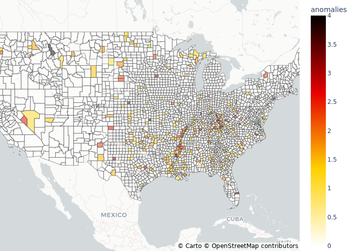
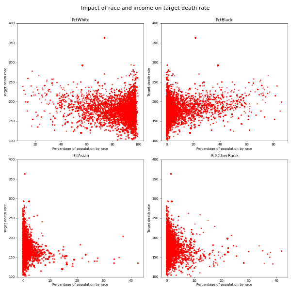

INTRODUCTION#
The analysis of cancer death rates across the United States plays a crucial role in understanding the factors influencing these rates and developing effective public health strategies to reduce the impact of cancer on communities. In this study, we utilize two datasets: the FIPS dataset containing geographical information of counties, and the Cancer Regression dataset, which provides data on cancer death rates and other associated variables.
The FIPS dataset comprises of Federal Information Processing Standards (FIPS) codes, county names, state names, and their respective abbreviations. This dataset allows us to filter and analyze data based on specific locations of interest across the country. For instance, we can extract information for Alameda County in California using the STATE_COUNTY column.
On the other hand, the Cancer Regression dataset provides a comprehensive view of cancer death rates and related variables such as average annual count of cancer cases, average deaths per year, incidence rates, median income, population estimates, and racial demographics, among others. Our team has conducted data exploration and cleaning on this dataset to better understand the variables related to cancer death rates and prepare the data for further analysis.
In our dataset, there are numerous features and one key label, TARGET_deathRate, which represents the cancer death rate per 100,000 population at risk. As the label has continuous numerical values, this dataset presents a regression problem. The majority of the features in the dataset are numerical, with the exception of ‘binnedInc,’ which is a categorical variable representing the income bracket. We have ensured that there are no missing data in the dataset, enabling us to perform accurate and reliable analyses.
By investigating these datasets, we aim to identify patterns and trends in cancer death rates and uncover the potential factors that contribute to these rates. The insights gained from this analysis can help inform data-driven policy-making and healthcare initiatives to mitigate the impact of cancer on communities across the United States.
Purpose Of Analysis#
The primary objective of analyzing the provided dataset on cancer-related death rates and socioeconomic indicators is to unveil the critical factors that contribute to the prevalence of cancer fatalities across the United States. Utilizing advanced statistical techniques and machine learning models, we aim to investigate the correlations between various socioeconomic variables and cancer death rates. Our goal is to pinpoint which factor(s) have the most substantial impact on cancer-related mortality rates among different population groups. The analysis will offer valuable insights into the principal determinants of cancer-related death rates, thereby enabling the development of targeted public health initiatives and policies to reduce cancer fatalities and improve the overall well-being of the population.
Data Visualization#
In our analysis, we initially explored the ratio between average cancer mortality and median income per capita in each county. This involved applying a log transformation to the median income and calculating the ratios. Anomalies were identified by standardizing the ratio values, resulting in a new variable called “Anomalies” representing the standard deviations from the mean ratio. Anomalies less than |1| were considered not significant and set to 0. The results were compiled into a dataframe.
We focused on positive anomalies, indicating a high cancer mortality compared to median income. The graph revealed that most positive anomalies were concentrated in the South-East region, suggesting a possible region-wide trend. We proposed analyzing the impact of a dummy variable for the South-East region on average cancer mortality to assess if it is a significant factor. If it proves significant, it could justify additional federal spending in that area. Furthermore, a significant dummy variable would support the relationship between median income and average cancer mortality. It is important to note that the visualization considers the ratio between cancer mortality and median income, not just cancer mortality alone.

Additionally, we explored the relationship between race, income, and cancer mortality using a faceted plot. This plot displayed county-level racial distribution percentages, median income ranges, and the impact on annual average cancer mortality. The plot indicated that income and racial demographics should be considered as features, and the effect of income on mortality varies by race. This suggests the need to address multicollinearity and account for regional and subpopulation differences in our model construction and interpretation.

Overall, our analysis highlights the complex and non-linear relationships between racial percentages, income, and cancer mortality. Linear modeling and appropriate methods will be explored in subsequent analyses to better understand these relationships.
Regression Analysis#
The project then runs a regression analysis for predicting cancer mortality rates. The analysis involves preprocessing the data, selecting variables based on domain knowledge and literature review, and fitting an ordinary least squares (OLS) regression model.
The preprocessing step involves cleaning the data and converting state names to integers using the cancerolstools preprocess module. The missing values in certain variables are imputed using the Multiple Imputation by Chained Equations (MICE) technique.
The initial variable selection for the regression model is informed by domain knowledge and insights from the prior visualizations. Variables such as povertyPercent, PctBlack, PctNoHS18_24, and PctHS18_24 are chosen based on their importance in cancer mortality.
The regression model is fitted using the OLS method from the statsmodels library. The initial model has a low R-squared value of 0.24, indicating weak explanatory power.
To improve the model, a categorical variable “isSoutheast” is created to indicate whether a county is in the Southeast region. The regions are defined based on the Bureau of Economic Analysis classification. ANOVA is used to test the significance of this categorical variable in the regression.
We further employ some techniques to evaluate some feature selection and model performance metrics. We apply LASSO in order to aattempt to select out features of the model, with mixed results depending on various hyperparameter values. We also apply the nonparametric bootstrap to perform a relaxed analysis on the statistical significance of the coefficients of the model, noticing some trends and applying a Bonferroni correction in light of testing for many coefficients.
Conclusion#
The initial regression analysis provides insights into the relationships between socioeconomic factors and cancer mortality rates. Further refinement and analysis are needed to develop a more robust and accurate predictive model.
The most important finding is that counties in the Southeast region of the United States have significantly higher cancer mortality than other regions of the United States. We are able to reject the hypothesis that the Southeast dummy variable may be 0 utilizing the nonparametric bootstrap, and also note it was not selected out of the model when using the LASSO algorithm.
Regardless, from these conclusions we would suggest further research on specifically the Southeast region of the United States, to better understand the specific causes of such higher mortality rates. Additionally, based on the results, education and poverty were identified as significant predictors of cancer mortality, suggesting a few areas of focus to start research on. Overall, the results highlight the need for federal action to aid these Southeast communities, which in turn will reduce cancer mortality overall in the United States.